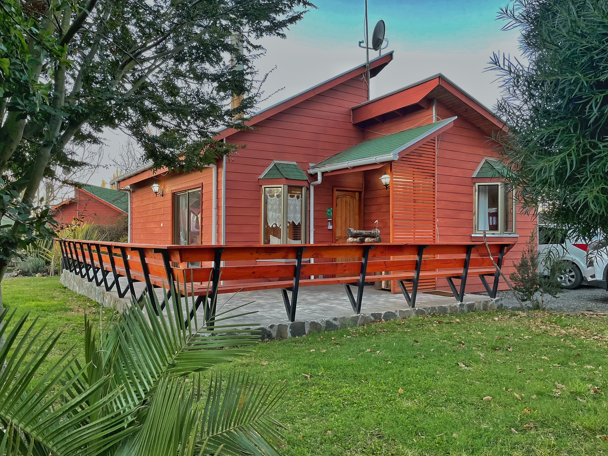
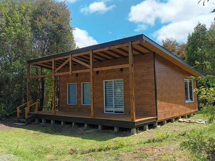
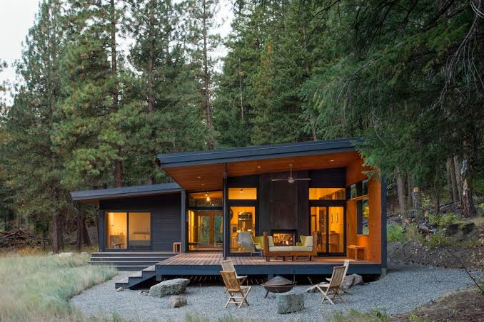

Cabaña Familiar

Perfecta para familias y grupos pequeños, esta cabaña combina espacio, comodidad y un ambiente tranquilo rodeado de naturaleza. Cuenta con una distribución práctica para disfrutar de momentos en comunidad y descansar con total relajación.
Cabaña Simple

Una opción básica y acogedora para quienes buscan una experiencia relajada en contacto con la naturaleza. Ideal para viajeros que priorizan comodidad, acceso a senderos y una estadía tranquila en medio del paisaje andino.
Cabaña VIP

Diseñada para viajeros que buscan una experiencia premium, esta cabaña ofrece mayor exclusividad, vistas privilegiadas, ambiente elegante y servicios que elevan el confort durante la estadía.